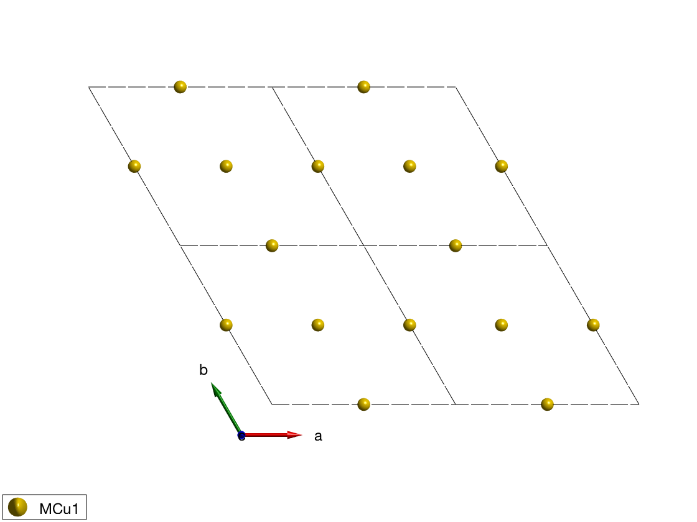
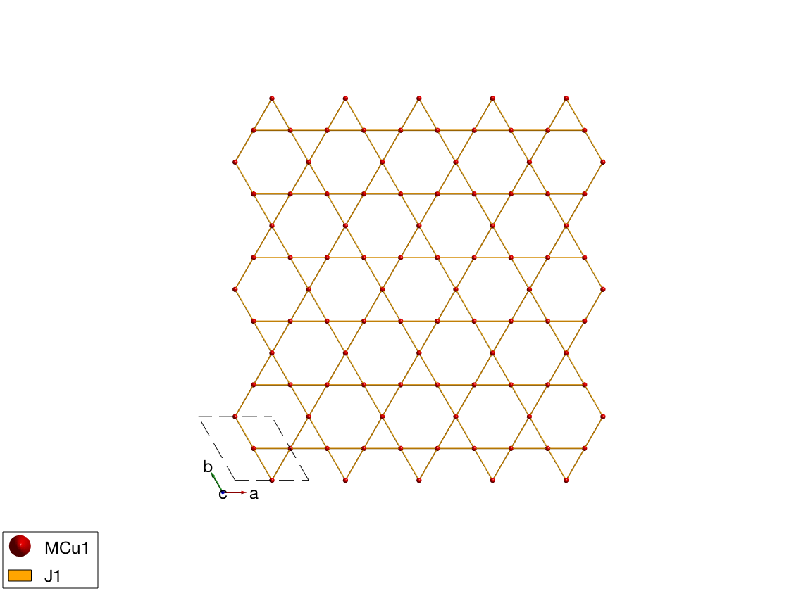
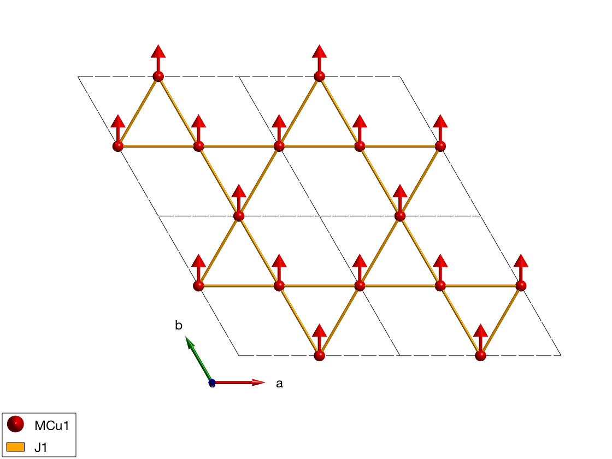
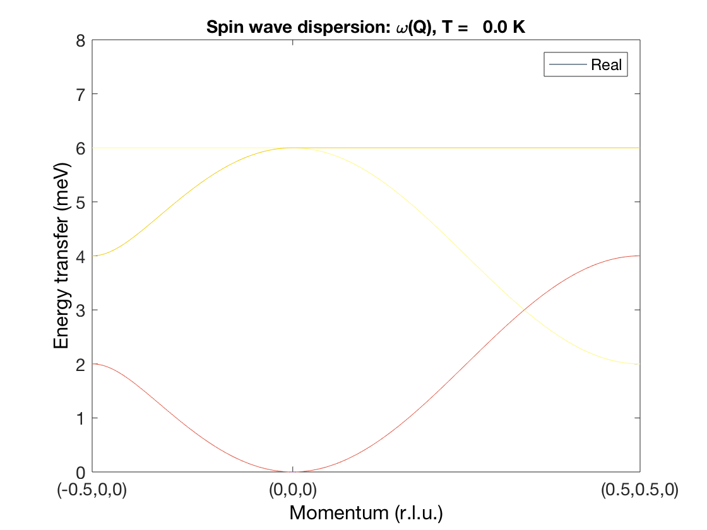
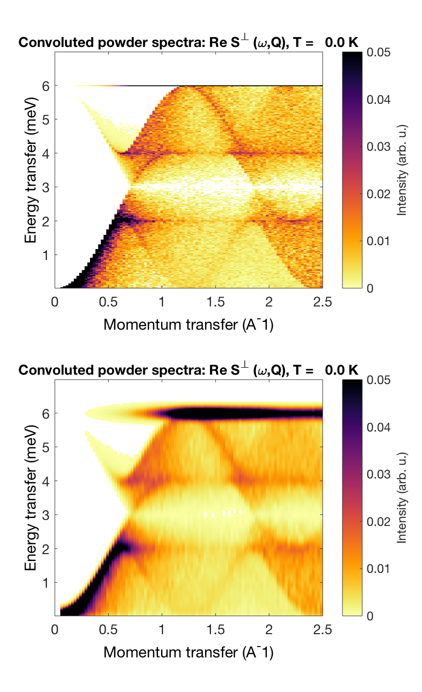

Contents
Ferromagnetic first neighbor Kagome lattice
We define the kagome lattice using the "P -3" space group (Nr. 147), using the 3 fold symmetry, we need to define only one magnetic atom. In this space group all fisrt neighbor couplings will be equivalent (related by symmetry). Symmetry equivalent positions of the magnetic atoms are automatically generated by the spinw.matom method. The magnetic atoms are Cu+ with S=1 spin.
FMkagome = spinw; FMkagome.genlattice('lat_const',[6 6 5],'angled',[90 90 120],'spgr','P -3') FMkagome.addatom('r', [1/2 0 0], 'S', 1, 'label','MCu1','color','r') disp('Magnetic atom positions:') FMkagome.table('matom') plot(FMkagome,'range',[2 2 1],'atomColor','gold')
Magnetic atom positions:
ans =
matom idx S pos
______ ___ _ _________________
'MCu1' 1 1 0.5 0 0
'MCu1' 2 1 0 0.5 0
'MCu1' 3 1 0.5 0.5 0
 Create FM bonds
The first neighbor bonds will be ferromagnetic, J = -1 meV. The spinw.gencoupling will use the space group operators to identify equivalent couplings, if two bonds have the same length but not symmetry related, then they will be identified as different bonds. The 'maxDistance' option of the spinw.gencoupling method will be ensure that all bonds are generated up to the given distance in Angstrom.
FMkagome.gencoupling('maxDistance',4) disp('Bonds (length in Angstrom):') FMkagome.table('bond',[]) FMkagome.addmatrix('label','J1','value',-1,'color','orange'); FMkagome.addcoupling('mat','J1','bond',1); % Plot a nice rectangular cutout of the kagome lattice plot(FMkagome,'range',[31 32 2],'unit','xyz','cellMode','single')
Bonds (length in Angstrom):
ans =
bond dl length matom1 idx1 matom2 idx2 matrix
____ ______________ ______ ______ ____ ______ ____ ______________
1 0 1 0 3 'MCu1' 3 'MCu1' 1 '' '' ''
1 0 -1 0 3 'MCu1' 1 'MCu1' 2 '' '' ''
1 0 0 0 3 'MCu1' 2 'MCu1' 3 '' '' ''
1 0 0 0 3 'MCu1' 3 'MCu1' 1 '' '' ''
1 1 0 0 3 'MCu1' 1 'MCu1' 2 '' '' ''
1 -1 0 0 3 'MCu1' 2 'MCu1' 3 '' '' ''
 FM magnetic structure
All spins are paralle, pointing along the y-axis (perpendicular to ac plane). We use the "helical" mode of the sw.gencoupling() function, even though the structure is not helical. However in this mode all missing spins will be automatically created using the k-vector and normal vector and assuming helical magnetic structure. Thus if we give k = (0 0 0) and only the direction of the first spin in the unit cell, the code will create all other spin parallel to the first.
FMkagome.genmagstr('mode','helical','k',[0 0 0],'n',[0 1 0],'S',[0 1 0]') disp('Magnetic structure:') FMkagome.table('mag') FMkagome.energy plot(FMkagome,'range',[2 2 1])
Magnetic structure:
ans =
num matom idx S realFhat pos kvect
___ ______ ___ _ ___________ _________________ ___________
1 'MCu1' 1 1 0 1 0 0.5 0 0 0 0 0
2 'MCu1' 2 1 0 1 0 0 0.5 0 0 0 0
3 'MCu1' 3 1 0 1 0 0.5 0.5 0 0 0 0
Ground state energy: -2.000 meV/spin.
 Spin wave dispersion
We calculate the spin wave dispersion. There are three modes, equal to the number of magnetic atom in the magnetic unit cell, denoted by different colors. At the zone center, the dispersion of the goldstone mode is parabolic, due to the FM interactions.
fmkSpec = FMkagome.spinwave({[-1/2 0 0] [0 0 0] [1/2 1/2 0] 100},'hermit',false);
fmkSpec = sw_neutron(fmkSpec);
fmkSpec = sw_egrid(fmkSpec, 'Evect',linspace(0,6.5,100),'component','Sperp');
figure
sw_plotspec(fmkSpec,'mode',1,'colorbar',false,'axLim',[0 8])
 Powder spectrum
We plot the powder spectrum two different ways. First as calculated (to show the extremely sharp Van Hoove singularity at the top of the dispersion), secondly convolute with a Gaussian along energy.
fmkPow = FMkagome.powspec(linspace(0,2.5,100),'Evect',linspace(0,7,250),'nRand',1000,'hermit',false); figure subplot(2,1,1) sw_plotspec(fmkPow,'colorbar',true,'axLim',[0 0.05]) subplot(2,1,2) sw_plotspec(fmkPow,'colorbar',true,'axLim',[0 0.05],'dE',0.25,'norm',true) swplot.subfigure(1,3,1)
Written by Bjorn Fak & Sandor Toth 06-Jun-2014, 06-Feb-2017